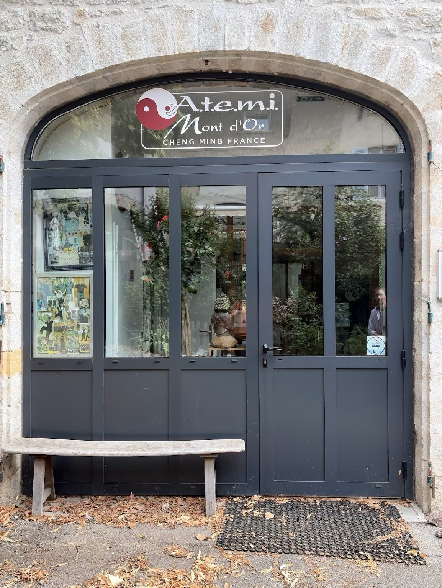
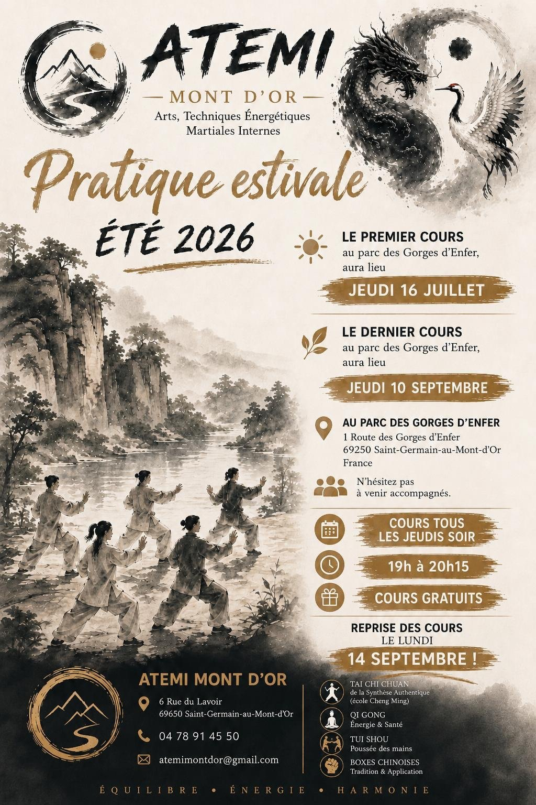
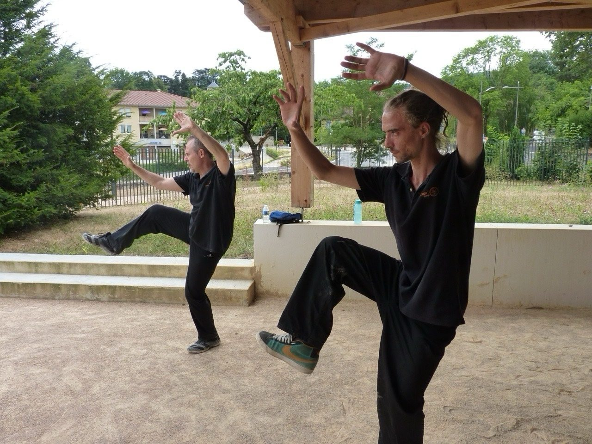

Nei Gong & Yang Sheng
Posture, respiration, relâchement, perception et entretien du corps.
ATEMI Mont d’Or transmet les arts énergétiques et martiaux internes chinois dans un esprit d’exigence, de bienveillance et de recherche personnelle.

Bien-être, construction interne, transmission traditionnelle et approche martiale se répondent dans un même chemin pédagogique.
Posture, respiration, relâchement, perception et entretien du corps.
Formes traditionnelles, continuité, enracinement et transformation du geste.
Xing Yi Quan, Bagua Zhang, Da Cheng Chuan, Tui Shou et applications.
Lundi 14 septembre 2026 à 10h00.

Cours gratuits tous les jeudis soir, de 19h00 à 20h15, au parc des Gorges d’Enfer à Saint-Germain-au-Mont-d’Or.
Du jeudi 16 juillet au jeudi 10 septembre 2026. Les participants peuvent venir accompagnés.

Découvrez la chanson du club, inspirée par l’esprit d’ATEMI, la pratique des arts internes et le lien entre enracinement et élévation.